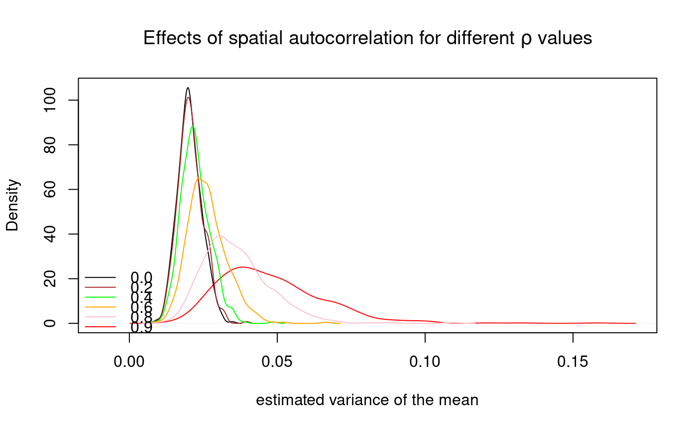

invIrM.RdComputes the matrix used for generating simultaneous autoregressive random variables, for a given value of rho, a neighbours list object or a matrix, a chosen coding scheme style, and optionally a list of general weights corresponding to neighbours.
invIrM(neighbours, rho, glist=NULL, style="W", method="solve", feasible=NULL) invIrW(x, rho, method="solve", feasible=NULL)
| neighbours | an object of class |
|---|---|
| rho | autoregressive parameter |
| glist | list of general weights corresponding to neighbours |
| style |
|
| method | default |
| feasible | if NULL, the given value of rho is checked to see if it lies within its feasible range, if TRUE, the test is not conducted |
| x | either a |
The invIrW function generates the full weights matrix V, checks that rho lies in its feasible range between 1/min(eigen(V)) and 1/max(eigen(V)), and returns the nxn inverted matrix $$(I - \rho V)^{-1}$$. With method=“chol” (only for a listw object), Cholesky decomposition is used, thanks to contributed code by Markus Reder and Werner Mueller.
Note that, in some situations in simulation, it may matter that the random vector from rnorm or similar will not be exactly N(0, 1), and it will also contain random amounts of spatial autocorrelection itself, which will mix with the spatial autocorrelection injected by the process operator $$(I - \rho V)^{-1}$$. In addition, it will not follow the stipulated distribution exactly either, so that several steps may be needed to scale the random vector, to remove artefacts coming from its deviance from distributional parameters, and to remove random spatial autocorrelation - see the examples below. Thanks to Rune Østergaard Pedersen for bring up this question.
The powerWeights function uses power series summation to cumulate the product $$(I - \rho V)^{-1} \%*\% X$$ from $$(I + \rho V + (\rho V)^2 + \dots) \%*\% X$$, which can be done by storing only sparse V and several matrices of the same dimensions as X. This makes it possible to handle larger spatial weights matrices, but is sensitive to the power weights order and the tolerance arguments when the spatial coefficient is close to its bounds, leading to incorrect estimates of the implied inverse matrix.
An nxn matrix with a "call" attribute; the powerWeights function returns a matrix of the same dimensions as X which has been multipled by the power series equivalent of the dense matrix $$(I - \rho V)^{-1}$$.
Before version 0.6-10, powerWeights only worked correctly for positive rho, with differences from true values increasing as rho approached -1, and exploding between -1 and the true negative bound.
Tiefelsdorf, M., Griffith, D. A., Boots, B. 1999 A variance-stabilizing coding scheme for spatial link matrices, Environment and Planning A, 31, pp. 165-180; Tiefelsdorf, M. 2000 Modelling spatial processes, Lecture notes in earth sciences, Springer, p. 76; Haining, R. 1990 Spatial data analysis in the social and environmental sciences, Cambridge University Press, p. 117; Cliff, A. D., Ord, J. K. 1981 Spatial processes, Pion, p. 152; Reder, M. and Mueller, W. (2007) An Improvement of the invIrM Routine of the Geostatistical R-package spdep by Cholesky Inversion, Statistical Projects, LV No: 238.205, SS 2006, Department of Applied Statistics, Johannes Kepler University, Linz
nb7rt <- cell2nb(7, 7, torus=TRUE) lw <- nb2listw(nb7rt, style="W") set.seed(1) x <- matrix(sample(rnorm(500*length(nb7rt))), nrow=length(nb7rt)) if (requireNamespace("spatialreg", quietly=TRUE)) { # Only needed in some simulation settings where the input and # output distributions must agree in all but autocorrelation if (FALSE) { e <- spatialreg::eigenw(lw) x <- apply(x, 2, scale) st <- apply(x, 2, function(x) shapiro.test(x)$p.value) x <- x[, (st > 0.2 & st < 0.8)] x <- apply(x, 2, function(v) spatialreg::residuals.spautolm( spatialreg::spautolm(v ~ 1, listw=lw, method="eigen", control=list(pre_eig=e, fdHess=FALSE)))) x <- apply(x, 2, scale) } res0 <- apply(invIrM(nb7rt, rho=0.0, method="chol", feasible=TRUE) %*% x, 2, function(x) var(x)/length(x)) res2 <- apply(invIrM(nb7rt, rho=0.2, method="chol", feasible=TRUE) %*% x, 2, function(x) var(x)/length(x)) res4 <- apply(invIrM(nb7rt, rho=0.4, method="chol", feasible=TRUE) %*% x, 2, function(x) var(x)/length(x)) res6 <- apply(invIrM(nb7rt, rho=0.6, method="chol", feasible=TRUE) %*% x, 2, function(x) var(x)/length(x)) res8 <- apply(invIrM(nb7rt, rho=0.8, method="chol", feasible=TRUE) %*% x, 2, function(x) var(x)/length(x)) res9 <- apply(invIrM(nb7rt, rho=0.9, method="chol", feasible=TRUE) %*% x, 2, function(x) var(x)/length(x)) plot(density(res9), col="red", xlim=c(-0.01, max(density(res9)$x)), ylim=range(density(res0)$y), xlab="estimated variance of the mean", main=expression(paste("Effects of spatial autocorrelation for different ", rho, " values"))) lines(density(res0), col="black") lines(density(res2), col="brown") lines(density(res4), col="green") lines(density(res6), col="orange") lines(density(res8), col="pink") legend(c(-0.02, 0.01), c(7, 25), legend=c("0.0", "0.2", "0.4", "0.6", "0.8", "0.9"), col=c("black", "brown", "green", "orange", "pink", "red"), lty=1, bty="n") }# NOT RUN { x <- matrix(rnorm(length(nb7rt)), ncol=1) system.time(e <- invIrM(nb7rt, rho=0.9, method="chol", feasible=TRUE) %*% x) system.time(e <- invIrM(nb7rt, rho=0.9, method="chol", feasible=NULL) %*% x) system.time(e <- invIrM(nb7rt, rho=0.9, method="solve", feasible=TRUE) %*% x) system.time(e <- invIrM(nb7rt, rho=0.9, method="solve", feasible=NULL) %*% x) # }